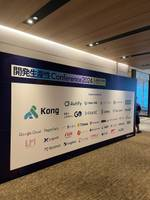
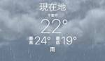
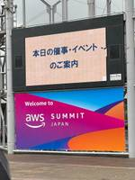

東京ガス内製開発チーム Tech Blog
https://tech-blog.tokyo-gas.co.jp/
東京ガス内製開発チームのTech Blogです！
フィード

開発生産性カンファレンス 2024に参加してきました！
東京ガス内製開発チーム Tech Blog
こんにちは、中嶋です！ 先日の2024年6月28日〜29日に開催されたファインディ株式会社が主催する開発者生産性カンファレンス 2024に参加してきたので、本記事では参加したセッションの中で印象に残ったところや全体を通しての感想などをお伝えできればと思います！ 会場の様子 参加したセッションの感想 価値創造と開発生産性 開発組織の生産性を加速させる: 継続的価値提供を実現する文化と仕組み アーキテクチャレベルで考える開発生産性 開発生産性の観点から考える自動テスト まとめ おまけ 巨大ガチャ 懇親会 会場の様子 今年のイベント会場は、虎ノ門ヒルズでした。 昨年よりも参加者が増えているとのことで…
12時間前

AWS Summit 二日目参加レポート（とオマケ）
東京ガス内製開発チーム Tech Blog
SREチームのあおしょん（本名：青木）です。 今回は幕張メッセで2024年6月20, 21日の二日間に渡って開催された AWS Summit Japan の内、二日目の6月21日（金）のみ参加することが出来たのでそのレポートについて発信します。 会場までの道のり AWS Summit ブース回り AWS Summit セッション聴講 オマケ：海浜幕張のランチ事情 おわりに 会場までの道のり 自宅を出る前に天気予報を見たら千葉県の最高気温は20℃前半でした。「割と涼しめで過ごしやすそうじゃん」と思い七分袖シャツをチョイス。自宅から最寄りの駅まで歩くこと約15分…体感かなり暑かったので汗だくになり…
5日前

AWS Summit Japan に参加してきました！
東京ガス内製開発チーム Tech Blog
こんにちは、SRE チームの迫田です！ 2024年6月20日〜21日に開催された AWS Summit Japan に参加してきましたので、今回の記事ではその時の様子や感じたことをお伝えしたいと思います！ AWS Summit Japan とは？ 当日の様子 参加したセッションの感想 エンタープライズシステムが抱える課題とマイクロサービスアーキテクチャ Amazon Aurora の技術とイノベーション Deep dive 所感など さいごに AWS Summit Japan とは？ 日本で開催される最大規模の AWS のイベントで、AWS について学習し、ベストプラクティスの共有や情報交換が…
6日前
CloudNative Days Summer 2024 に参加してきました！
東京ガス内製開発チーム Tech Blog
みなさんこんにちは、EMとSREの両立を何とか頑張っている杉山です。最近は Terraform も manifest もレビューしてばかりなので、そろそろ自分も書きたい今日この頃･･･です🥺 さて、去る6月14日(土)、札幌で開催された CloudNative Days Summer 2024 に現地参加してきましたので、今回はその中でも特に印象に残ったセッションについて、感想など書いていきたいと思います！（あくまでも個人の感想です。 CloudNative Days とは？ 参加したセッション感想など クラウドネイティブな省エネサービスの内製開発で、BizDevOpsを実現する リードタイム…
7日前

CloudNative Days Summer 2024 プレイベント@東京に登壇してきました！
東京ガス内製開発チーム Tech Blog
みなさんこんにちは、杉山です。気付けば5月も終わりですね。新年度、新しい環境でスタートされた方々も、すっかり慣れてきた頃でしょうか。当チームの4月にジョインしたメンバーも、既にバリバリ活躍してくれており、頼もしい限りです！！ 話題はかわりまして…先日5月22日、「CloudNative Days Summer 2024 プレイベント@東京」というイベントにて登壇してまいりましたので、そのときの様子などを書いてみたいと思います💪 cloudnativedays.connpass.com なぜ登壇したの？ 当チームでは EKS を採用しておりますが、Kubernetes や OSS に触れていく中…
1ヶ月前
DevOpsDays Tokyo 2024で登壇しました！
東京ガス内製開発チーム Tech Blog
こんにちは、ソフトウェアエンジニアリングチームでチームリーダー兼テックリードをしております中島です。 4/16(火), 4/17(水)で開催されたDevOpsDays Tokyo 2024に登壇しましたので、今回はそのレポートです！ DevOpsDays Tokyo 2024にはチームメンバーの相川も参加しておりレポート記事を書いていますので、ぜひそちらもご覧ください！ tech-blog.tokyo-gas.co.jp tech-blog.tokyo-gas.co.jp 登壇のきっかけ 登壇内容 登壇でお伝えしたこと Networking Party 最後に 登壇のきっかけ 東京ガスでは他部…
1ヶ月前
DevOpsDays Tokyo 2024参加レポート！（Day2）
東京ガス内製開発チーム Tech Blog
みなさん、こんにちは！myTOKYOGAS フロントエンドチームに所属しております相川と申します。2024年4月16日〜17日に「DevOpsDays Tokyo 2024」が開催されましたね！私は初めてのカンファレンス参加だったのでドキドキワクワクしながら参加してきました。 はじめに サービス運用はボールを落とさない競技 : 2009年DevOpsDays の誕生と私の身の回りの話 Value-Driven DevOps Team〜価値貢献を大切にするチームがたどり着いたDevOpsベストプラクティス〜 金融業界で複数チームDevOpsを目指して奮闘している話 まとめ はじめに 今回の記事で…
2ヶ月前
myTOKYOGAS内製開発チームによるスクラムの実践
東京ガス内製開発チーム Tech Blog
こんにちは、myTOKYOGAS フロントエンドチームを担当している中嶋です！ 本稿では、myTOKYOGASの内製開発に取り組むウェブアプリのエンジニアチームがどのように他チームと連携しながら新規機能の開発を行なっているかをご紹介させて頂ければと思います！ 新規機能開発について ビジネスチームとの連携 スプリント・プランニング デイリー・スタンドアップ リファインメント スプリント・レビュー レトロスペクティブ おわりに 新規機能開発について 我々が日々開発や保守・運用を行っているmyTOKYOGASは、現在たくさんのお客さまからご質問やご要望を頂いております。それらを受けてエンジニアチーム…
2ヶ月前
「楽」する前のTerraformバージョンアップ方針と運用整理（とポエム）
東京ガス内製開発チーム Tech Blog
はじめに、はじめまして。リビング戦略部SREチームのあおしょん（本名：青木）と申します。 2024年4月1日から弊チームにジョインしたピチピチの新人*1です。 入社から約一ヶ月過ぎまして、現在も盛りだくさんの情報量と圧倒的当事者意識を持っている弊社の優秀なエンジニアたちに日々圧倒されながらも一刻も早く事業に貢献出来るように歩を進めています。 大きな貢献が出来ている、とは未だ胸を張って言えないのですが入社したてで業務知識が無くてもまずは小さい貢献からコツコツと始めてみよう、ということで弊チームにおけるTerraformバージョンアップの方針と運用について整理したのでご紹介いたします。 ご紹介の前…
2ヶ月前
DevOpsDays Tokyo 2024参加レポート！（Day1）
東京ガス内製開発チーム Tech Blog
みなさん、こんにちは！myTOKYOGAS フロントエンドチームに所属しております相川と申します。2024年4月16日〜17日に「DevOpsDays Tokyo 2024」が開催されました。テックリードの中島がスピーカーとして登壇するため、ぜひ応援に行かせて欲しいと立候補し無事許可をいただいたので参加してきました！業務調整してくださったチームの皆様本当にありがとうございます！ はじめに DevOpsDaysとは DevOpsのグローバルトレンド 自動生成を活用した、運用保守コストを抑える Error/Alert/Runbook の一元集約管理 トランクベース開発の導入で見えた、DevOpsの…
2ヶ月前
Terraform を活用したインフラ構築の紹介
東京ガス内製開発チーム Tech Blog
はじめまして！東京ガスリビング戦略部の SRE チームに所属しております迫田と申します。 私は2024年1月に東京ガスに入社し、現在 myTOKYOGAS フロントエンドのインフラ運用やマイクロサービスプラットフォームの構築を担当しています。 今回の記事では、Terraform を活用したインフラ環境の構築についてご紹介します。 Terraform とは？ チームにおける Terraform の使い方 なぜ AWS 環境でも Terraform を採用したのか 理想と課題 さいごに Terraform とは？ HashiCorp 社が提供する Infrastructure as Code (I…
3ヶ月前
2024年度がスタートしました！
東京ガス内製開発チーム Tech Blog
24年度よりエンジニアリングマネージャー兼SREチームリーダーとして活動を開始した杉山です。今回は新年度ということで、ポエムを書いてみました。 我々のチームは、24年度からリビング戦略部という部署に移りました。この部署は B2C 分野における様々な施策を牽引する役割を担っており、我々のチームも myTOKYOGAS の枠を超えて、新たなチャレンジを期待されています。4月には新たな仲間もジョインし、スタートダッシュで転ばぬよう、今この瞬間も駆け抜けています。 しかし、掲げている大きなミッションは変わっていません。それは「お客さまに提供するプロダクトの価値をエンジニアリングで向上させること」です。…
3ヶ月前
モバイルアプリ開発チームのご紹介！
東京ガス内製開発チーム Tech Blog
はじめまして！モバイルアプリチームを担当している北沢です！ 内製開発チームは複数のチームで構成されており、私は「モバイルアプリチーム」での開発を担当しています。 東京ガスが掲げている大きな目標である「『CO2ネット・ゼロ』をリード」に貢献すべく、お客さまへの新たな価値提供をモバイルアプリによって実現していくために発足したチームです。 今はまだプロダクトの内容についてはご紹介できないのですが、技術スタックや開発手法などチームがどのような形で日々開発を行なっているのかをご紹介できればと思います。 開発の流れ プロダクトビジョン、行動規範 スクラムイベント コミュニケーション 技術スタック さいごに…
3ヶ月前
myTOKYOGASフロントチームによるDevSecOpsの旅路への第一歩
東京ガス内製開発チーム Tech Blog
はじめまして！東京ガスでmyTOKYOGASフロントエンドチームを担当している中嶋です！ 本稿では、当チームのプロダクト開発において、パッケージ更新とリリース作業を取り上げて、内製開発の様子をご紹介させて頂ければと思います。 パッケージ更新について Dependabotによる自動更新 コンテナのセキュリティ脆弱性診断について リリース作業について テスト用の検証環境 ブランチ運用について デプロイ作業について おわりに プロダクトの技術スタックについては、こちらをご覧ください。 note.com パッケージ更新について パッケージ更新は地味な作業かもしれないですが、更新せずに長期間に渡って放置…
3ヶ月前
フリーランスから東京ガスに入社して内製開発に挑戦する話
東京ガス内製開発チーム Tech Blog
みなさん、こんにちは！myTOKYOGAS フロントエンドチームに所属しております相川と申します。 2024年1月に東京ガスの仲間入りをし、早3ヶ月が経ちました。 このエントリでは、フリーランスから東京ガスに入社するに至った経緯について、拙い文章で恐縮ですが書いていこうと思いますので最後までお読みいただけたら幸いです。 これまでの経歴 東京ガスとの出会い なぜ東京ガスに入社したのか 入社後の気づき オープンなコミュニケーション文化 フレキシブルな働き方 貸与されるPCのスペックが高い 今、何しているのか さいごに これまでの経歴 入社以前はフリーランスエンジニアとして活動しておりました。 20…
3ヶ月前
Amazon EKS の Ingress を考える ~ AWS Load Balancer Controller + Istio ~
東京ガス内製開発チーム Tech Blog
みなさんこんにちは、杉山です。花粉症に必死に抗う毎日ですが、気づいたら3月も残りわずかですね。同士のみなさん、がんばって乗り越えましょう！ さて今回は、私の前回記事：Amazon EKS 導入に続いて、少しだけ深堀りして Ingress の部分について書いてみたいと思います。 Amazon EKS の Ingress を考える ALBC + Istio 全体構成 構築してみる - ALBの作成 - Istio コアコンポーネントのインストール Gateway リソースの作成 Virtual Service の作成 実際にやってみて さいごに Amazon EKS の Ingress を考える …
3ヶ月前
Amazon EKS で始めるマイクロサービスプラットフォーム
東京ガス内製開発チーム Tech Blog
みなさんこんにちは！ エンジニアリングチームリーダー兼SREの杉山です。 今回は「マイクロサービスプラットフォームとしての Amazon EKS 導入」について投稿します！ 第一弾は導入にいたった経緯などをご紹介、以降は細かいところもご紹介できたらな・・・と思っています。 Amazon EKS とは？ 導入のモチベーション どんな感じで使っているのか？ 監視ツール Karpenter Bottlerocket Kubernetes は大変？ さいごに ともに働く仲間を募集しています！ Amazon EKS とは？ みなさん大好きな AWS が提供するマネージド Kubernetes サービスで…
4ヶ月前
myTOKYOGAS内製化ジャーニー ~ エンジニアゼロからの挑戦 ~
東京ガス内製開発チーム Tech Blog
こんにちは、東京ガスのCX推進部デジタルマーケティンググループでテックリードをしております中島です。 東京ガスでは「myTOKYOGAS」のリニューアルプロジェクトにおいて、事業組織内に内製開発チームを立ち上げ、2023年11月にサービスインまでやり遂げました。今では自動テストやCI/CDの稼働はもちろんのこと、内製開発チームにて２週間1スプリントでのアジャイル開発と保守運用までを責任を持って行うことができるようになりました。 今回は我々が初めて内製化に挑んだプロジェクトであるmyTOKYOGASのリプレイスと並行して立ち上げを進めた内製開発チームについてお話ししたいと思います。 内製開発チー…
5ヶ月前
はじめまして！東京ガス内製開発チームです！
東京ガス内製開発チーム Tech Blog
みなさん、はじめまして！ 東京ガスCX推進部デジタルマーケティンググループでエンジニアチームのリーダーをしております杉山です。 このたび、当チーム（以下、内製開発チームと呼びます）での技術的な取り組みについて紹介するため、 Tech Blog を開設しました！ 実は私たち内製開発チームは note の方でも投稿しているのですが、このブログではソフトウェアエンジニアの内容に特化したものを投稿していく予定です💪 東京ガス内製開発チームって？ 私たちのチームは myTOKYOGAS を中心としたお客さま接点のあるプロダクトを扱っております。23年11月、 myTOKYOGAS のリニューアルにあたっ…
5ヶ月前